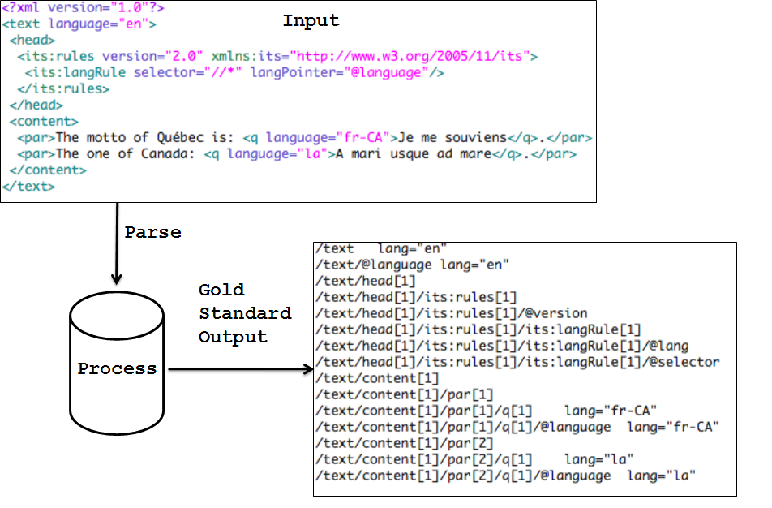

The ITS 2.0 test suite is located at the following address https://github.com/w3c/its-2.0-testsuite. There are four main parts to the ITS 2.0 test suite which are:
This conformance testing is used to determine whether ITS 2.0 implementations meet the ITS 2.0 specification standard. The test suite has a set of test documents for both XML and HTML which are then used to validate the different ITS 2.0 constructs available for each data category. There are a total of 225 test files spread across all 19 data categories for both HTML and XML.
Conformance testing is a type of testing where a system has to meet some specified standard. In the case of ITS 2.0 this standard is dictated by the W3C standards document http://www.w3.org/TR/its20/. To test for compliance a series of tests have been developed externally by TCD. The specification states that there are 4 different types of conformance which have to be tested for and more details on this can be found at the following address http://www.w3.org/TR/its20/#conformance.
The test suite is used to test user implementations conformance to the ITS 2.0 standard. The test suite has a set of test documents for both XML and HTML which are then used to validate the different ITS 2.0 constructs available for each data category. The ITS 2.0 test suite has 225 input test files which have been created for the 19 data categories. There are 136 XML input files and 89 HTML input files. All of these files have been validated successfully against the schemas for ITS 2.0. Section 4 of this document provides more information on how to validate XML files and validate HTML files. For the conformance testing, each test file in the test suite requires at least two implementations in order to be allowed into the ITS 2.0 standard. This is in line with the conformance clauses which can be found at the following address http://www.w3.org/TR/qaframe-spec/. The requirement of two implementations per test suite file helps in catching errors in the standard along with making sure implementers are using the standard correctly.
The detailed breakdown of the conformance testing results and of systems which are certified in complying with the ITS 2.0 standard can be found in the test suite implementation report. This report is located at the following address http://www.w3.org/International/multilingualweb/lt/drafts/its20/its20-implementation-report.html.

Figure 1: Testsuite processing Input to Output
The validation of the input files is done through processing the input file so that it outputs a file to match a corresponding gold standard output file. The gold standard was developed to be easy to understand and implement for conformance testers. The gold standard output format was developed by the ITS 2.0 working group. Figure 1 above describes the test suite files process. The ITS 2.0 test suite input files are located at the following address https://github.com/w3c/web-platform-tests/tree/master/conformance-checkers/html-its.
The gold standard output files have the following characteristics:
/html/body[1]/p[1]/span[2] annotatorsRef="text-analysis|http://enrycher.ijs.si" taConfidence="0.5" taIdent="301467919" taSource="Wordnet3.0"
/doc/header[1]/its:rules[1]/its:locQualityIssueRule[2]
/doc/header[1]/its:rules[1]/its:locQualityIssueRule[2]/@locQualityIssueComment
/doc/header[1]/its:rules[1]/its:locQualityIssueRule[2]/@locQualityIssueProfileRef
/doc/header[1]/its:rules[1]/its:locQualityIssueRule[2]/@locQualityIssueSeverity
/doc/header[1]/its:rules[1]/its:locQualityIssueRule[2]/@locQualityIssueType
/doc/header[1]/its:rules[1]/its:locQualityIssueRule[2]/@locQualityIssuesRef
/doc/header[1]/its:rules[1]/its:locQualityIssueRule[2]/@selector
/html/body[1]/p[1]/span[2] annotatorsRef="text-analysis|http://enrycher.ijs.si" taConfidence="0.5" taIdent="301467919" taSource="Wordnet3.0"
Incorrect:
/doc/para[1]/issue[2] locQualityIssueTypePointer="misspelling" locQualityIssuesRefPointer="#l1234"
Correct:
/doc/para[1]/issue[2] locQualityIssueType="misspelling" locQualityIssuesRef="#l1235"
Incorrect:
/doc/p[1] its-loc-quality-issue-type="misspelling" locQualityIssuesRef="#l1235"
Correct:
/doc/p[1] locQualityIssueType="misspelling" locQualityIssuesRef="#l1235"
The conformance test output of a proposed ITS2.0 implementation is located in the folder its-2.0-testsuite/its2.0/outputimplementors. This can be tested against the gold standard output files located in the its-2.0-testsuite/its2.0/expected folder. This can be done simply through performing a diff of the implementation’s output files and the corresponding gold standard output files. To automate this process for implementers a test suite dashboard was created which supports the following tasks :
To validate the implementers output files the test suite dashboard has to be compiled so that a diff across all files in the its-2.0-testsuite/its2.0/outputimplementors folder can be performed against the corresponding files in the gold standard output its-2.0-testsuite/its2.0/expected folder. The test suite dashboard can be compiled by doing the following:
The files for the test suite dashboard are as follows:
This part of the test suite is used to determine whether ITS 2.0 implementations of NIF 2.0 meet the ITS 2.0 specification standard for NIF usage. The mapping between an XML and HTML document annotated with ITS to and from NIF is not a normative part of the Its2.0 specification. The NIF test suite has a set of test documents for HTML for the Localisation Quality Issue data category which is then used to validate the different aspects of ITS 2.0 and NIF against various constructs available to the Localisation Quality Issue data category. There are a total of 11 files only for HTML in the Localisation Quality Issue data category. The input files are located in the its-2.0-testsuite/its2.0/nif-conversion/input folder.
The validation of the input files is done through processing the input file so that it outputs a file to match a gold standard output file. The gold standard for NIF is RDF output using the ITS 2.0 ontology. The gold standard output for NIF can be reached by following the NIF conversion algorithm discussed in the ITS 2.0 specification located http://www.w3.org/TR/its20/#conversion-to-nif.
The NIF output files are compared via the use of SPARQL queries done over the implementers RDF/NIF output files (.ttl). If the SPARQL queries are successful then the NIF output files are correct and meet the gold standard. The implementer’s NIF test output files are located in the its-2.0-testsuite/its2.0/nif-conversion/expected folder.
Prerequisites: Java and Unix Shell
Explanations of output:
This part of the test suite is important to ensure that any test input files, including any used by implementers in addition to the test suite, represent valid use of ITS2.0 annotation in HTML and XML. More information about this validator can be found http://validator.nu and http://about.validator.nu/.
The following sections detail how to validate the test suite input files both HTML and XML.
The test suite also contains some sample XLIFF files. These are not used in conformance testing, but demonstrate the representation of ITS 2.0 metadata in XLIFF. These XLIFF files are located in its-2.0-testsuite/its2.0/xliffsamples folder.